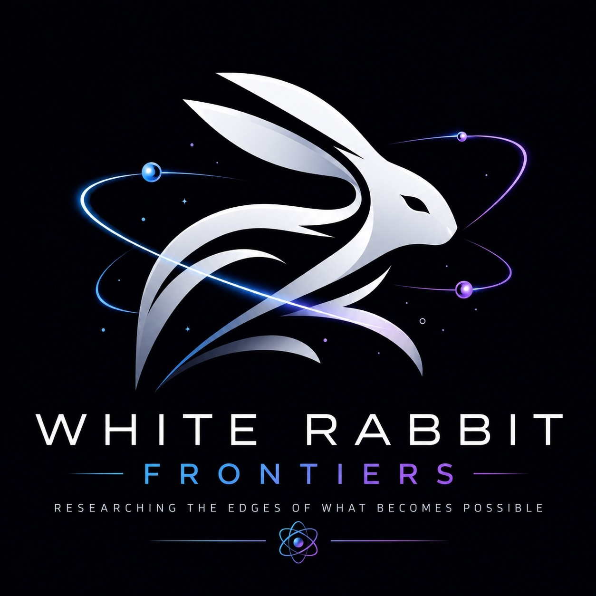

Emerging
The Ocean Is Becoming Readable
From reef soundscapes to environmental DNA and satellite monitoring, scientists are learning new ways to interpret living ecosystems.
Published featureRead the full investigation ↗
WHITE RABBIT FRONTIERSWHITE RABBIT RADAR / EDITORIAL LIBRARY
Science at the edges of the possible. Published investigations, research briefs in preparation, and questions we're keeping under watch.
← Back to the frontierTHE COLLECTION
From reef soundscapes to environmental DNA and satellite monitoring, scientists are learning new ways to interpret living ecosystems.
Published featureRead the full investigation ↗Researchers converted human blood-cell precursors into neural stem cells with strikingly young molecular age estimates. What the laboratory finding does, and does not, tell us about rejuvenation.
Published research explainerRead the full investigation ↗AI, biotechnology, sensors and robotics are beginning to reinforce one another. What new capabilities have actually been demonstrated, and which remain possibilities?
Published perspectiveRead the full investigation ↗When neural activity becomes measurable and potentially addressable, who holds the pen? A developing investigation into neurotechnology and human agency.
Published investigationRead the full investigation ↗Our evidence labels distinguish established findings, emerging research and speculative possibilities. Entries marked Published link to completed website articles. Each feature includes a discussion of evidence and limitations.